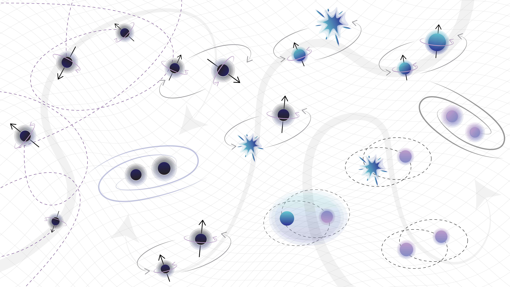

GWAC | Beijing Normal University
Invited to give a talk on the discovery of GW230529 at the Gravitational Wave Astrophysics Conference in China
Astrophysicist | OCA
Nice, France
Hi, I'm Shanika! I'm a postdoctoral researcher at the Observatoire de la Côte d'Azur (Lagrange laboratory) in Nice, France. I study pairs of the most extreme objects in the universe (e.g. black holes and neutron stars) using gravitational waves to understand how these systems lived their lives. I am a member of the LIGO-Virgo-KAGRA Collaboration as part of the Virgo ARTEMIS group.
More about me here.
The field of gravitational-wave astronomy is providing us with a wealth of information about the most extreme objects in the Universe. Since the first direct detection of gravitational waves in 2015, LIGO and Virgo now have a catalogue of ~100 compact binary mergers. Now we are in the midst of the fourth observing run (#O4IsHere)! With the growing number of gravitational-wave events, we are starting to uncover the population properties of these compact binaries.

My research involves using gravitational waves to study populations of compact binaries to probe the stellar evolution processes and formation mechanisms of these systems.
Detailed CV can be found here, updated Oct 2024.
2019-23
PhD | Monash University
Thesis: Population properties of black holes and neutron stars: the emerging picture from gravitational-wave astronomy
Supervisors: Eric Thrane and Ilya Mandel
2015-18
Bachelor of Science Advanced - Research (Honours) | Monash University
Thesis: Searching for X-ray pulsations from gravitational-wave candidates - 1st class honours
Supervisors: Duncan Galloway and Karl Wette
Below is a list of some key publications. I am an author on numerous publications as part of the LIGO-Virgo-KAGRA (LVK) Collaboration.
Galaudage, S., and Lamberts, A. Compactness peaks: An astrophysical interpretation of the mass distribution of merging binary black holes (2024) arXiv:2407.17561 (Submitted to A&A)
LVK Collaboration (incl. Galaudage, S.,) Observation of Gravitational Waves from the Coalescence of a 2.5–4.5 M⊙ Compact Object and a Neutron Star (2024) ApJL 970, L34
LVK Collaboration (incl. Galaudage, S.,) The population of merging compact binaries inferred using gravitational waves through GWTC-3 (2023) PRX 13, 011048
Galaudage, S., Talbot, C., Nagar, T., Jain, D., Thrane, E. and Mandel, I., Building better spin models for merging BBH: Evidence for non-spinning and rapidly spinning nearly aligned sub-populations, (2021) ApJL 921, L15
LVK Collaboration (incl. Galaudage, S.,) Population properties of compact objects from the second LIGO-Virgo Gravitational-Wave Transient Catalog (2021) ApJL 913 L7
Galaudage, S., Adamcewicz, C., Zhu, X.-J., Stevenson, S. and Thrane, E., Heavy double neutron stars: birth, mid-life and death, (2021) ApJL 909 L19
Galaudage, S., Talbot, C. and Thrane, E., Gravitational-wave inference in the catalog era: evolving priors and marginal events, (2020) PRD 102 083026
Find my full list of publications here.
Here is a highlight reel of my scientific presentations and selected events. An extended list is available in my CV.
Invited to give a talk on the discovery of GW230529 at the Gravitational Wave Astrophysics Conference in China
Selected in a globel competitive process to attend the 73rd Lindau Nobel Laureate Meeting (Physics).
Attended an LVK meeting in-person for the first time! Talked about the work in my latest research paper and made a poster on the topic.
A few of my outreach activities are listed below, ranging from podcasts to workshops! For an extended list of my outreach efforts, see my CV.
Invited to have a chat with the folks at LIGO India to talk about my career and details on gravitational-wave event GW230529.
Delivered a talk for a general audience on the highlights of gravitational-wave astronomy over the last 9 years.
Invited to have a chat with Brendan O'Brien on his AstroPhiz podcast. Chatted about gravitational-wave population inference studies and my journey as a researcher so far!
I enjoy designing graphics and materials I can use in my talks and posters to present my research in a concise and engaging way (a picture is worth a 1000 words!) Linked here are some of the materials I have created over the years, feel free to use them. Please add credit as "Shanika Galaudage".